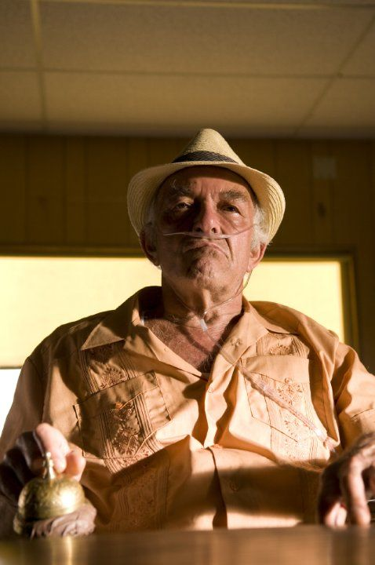

decide de sortir un spin off qui se concentre exclusivement sur le personnage de Jesse Pinkman :
decide de sortir un spin off qui se concentre exclusivement sur le personnage de Jesse Pinkman : Suite aux 5 saisons de Breaking Bad qui ont connu un succés sans précedent,le réalisteur de la serie Vince Gilligan : decide de sortir un spin off qui se concentre exclusivement sur le personnage de Jesse Pinkman :

Ce Spin Off sera en exclusivité sur Netflix et s'intitulera "EL Camino" : 
On a appris malheureusent récemment (3 Aout 2023) le décès de l'acteur Mark Margolis, figure de «Scarface», et «Better Call Saul» qui interpreter le personnage de Hector Salamanca dans Breaking Bad : 